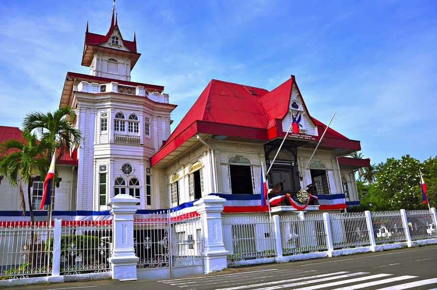

Home
Course Work
- HTML & CSS Fundamentals
- JavaScript Essentials
- Web Development Best Practices
Cavite, Philippines
Cavite is a province in the Philippines located on the southern shores of Manila Bay in the Calabarzon region on Luzon island. Situated 21 kilometers (13 mi) southwest of Metro Manila, it is one of the most industrialized and fastest-growing provinces in the Philippines.